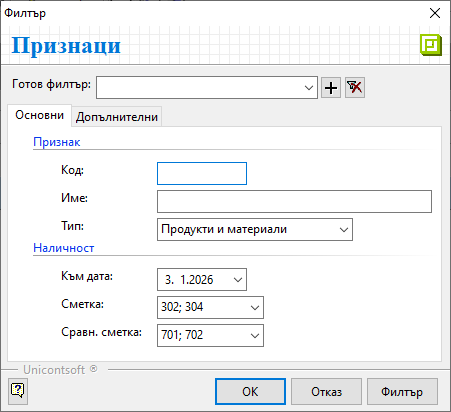
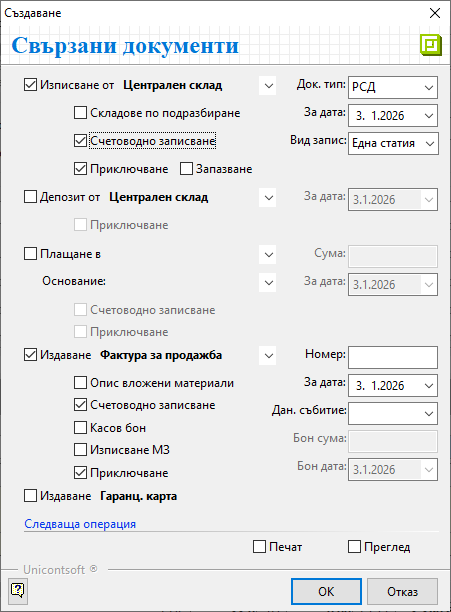

Документи за продажба#
Въведение#
Търговската операция по продажба на стоки и услуги от страна на контрагент Потребител на продукта се регистрира в системата чрез вътрешнофирмен документ Продажба. В него се описват всички продукти и договорените с клиента условия на сделката.
С приключването на документа за продажба възниква вземане от клиента.
Системата дава възможност за генерирация и на останалите свързани документи по сделката - складови, касови, данъчни и други. Това може да стане в момента на валидиране на продажбата или допълнително.
Тези операции могат да бъдат извършени от един потребител или от различни отдели в организацията.
Създаване на продажба#
Създаването на документи за продажба е достъпно в Търговска система » Документи за продажба. Това може да стане чрез клавишна комбинация Ctrl+N, чрез бутон Нов документ в лентата с инструменти или чрез десен бутон на мишката върху списъка с документи и Нов документ. Всеки от предложените варианти отваря празна форма за въвеждане на данни за продажба.
В раздел Основни трябва да се въведат данни за продажбата в секции Общи, Собствени и Купувач.
От полето Док. Тип се отваря падащ списък за избор на тип документ. По подразбиране системата попълва тип Продажба-Документ за продажба.
Поле Док. No съдържа номер на документа. Ако полето бъде оставено празно, при приключване на продажбата системата ще го обзаведе с пореден номер според настройките в Номератори.
Чрез Док. дата се определя дата, за която се отнася текущата продажба, а в поле Дан. събитие - дата на данъчното събитие.
Системата обзавежда Основание за прилагане с настроеното по подразбиране основание. То може да бъде променено от падащия списък в полето.
Основанията за прилагане са предварително настроени в Номенклатури » Референтни номенклатури.
Основание за прилагане е реквизитът, който указва вида на сделката. Заедно с него се обзавежда и ДДС с процент ДДС, който е настроен да съответства на избраното основание.
Полета Плащане и Падеж показват начина на плащане и падежа, договорени с клиента.
Системата обзавежда тези полета автоматично, когато за клиента има дефинирани настройки за отложено плащане и за начин на плащане.
Реквизити Съставил и Обект се обзавеждат автоматично според настройките на текущия потребител. Ако такива липсват или данните в полетата трябва да бъдат променени, се използват падащите списъци с предварителни настройки.
Системата обзавежда полето автоматично, когато за контрагента са направени съответните настройки.
Реквизит Обект е водещ при номериране на документите за продажба.
Настройката се дефинира в Администрация » Номератори и е различна за всеки обект.
Полето Търговец показва персона, която отговаря за бизнес отношенията с избрания клиент.
В секция Купувач се попълват реквизитите, свързани с клиента.
За обзавеждане на поле Контрагент се отваря форма за избор от списък с въведените в системата контрагенти. Ако търсеният контрагент липсва, системата позволява въвеждането му в момента.
Останалите полета в секцията се обзавеждат с настроените за избрания клиент реквизити.
При необходимост, могат да бъдат променени.
{kind=link}
Списък с продаваните продукти се добавя от реда за нов запис.
От поле Продукти и материали се отваря форма за избор със списък въведени продукти.
От раздел Продукти и материали в колони Разполагаемо кол. и Наличност в осн. мярка могат да се проследят свободните за продажба количества и физическите наличностите в склад. За целта от лентата Бърз филтър се избира Склад.
{kind=link}
От раздел Признаци в колона Салдо се вижда разполагаемото количество на продукти в счетоводния склад. В колона Разполагаемо се вижда разликата между наличното количество и фактурираното, но все още неизписано количество.
Данните се визуализират след филтриране на списъка по следния начин:

Раздел Редове на документи могат да се видят всички продажби на този клиент (с продукти, количествата, цени и други).
{kind=link}
бутон Избор добавя всички маркирани продукти в продажбата;
Количествата по продукти се въвеждат от Количество според избраната мерна единица.
Системата дава възможност за промяна на мерните единици в поле Мярка. Падащият списък в полето се обзавежда с настройките за продукта на текущия ред. Списъкът съдържа основна мерна единица за продукта и настроените му фасети на мерки.
Ценовите условия се дефинират с реквизити Цена, Цена с ДДС и ТО%.
Цена и Цена с ДДС съдържат единичната цена съответно без ДДС и с ДДС.
Достатъчно е да се попълни една от цените, при което системата автоматично изчислява другата.
Тези полета се обзавеждат автоматично, когато за текущия клиент има настроена ценова листа по подразбиране.
Цените в документа могат да се променят ръчно или чрез прилагане на ЦЛ. Прилагането става от поле Ц. листа (в лентата Бърз филтър) и бутона вдясно Прилагане ценова листа.
ТО% е полето, в което може да се попълни търговска отстъпка за избран продукт.
Процентите с отстъпки се обзавеждат автоматично, когато за текущия клиент има настроена схема с отстъпка по подразбиране.
Отстъпката в документа може да се променя ръчно или чрез прилагане на схема с ТО. Това става от поле Схема (в лентата Бърз филтър) и бутона вдясно Прилагане схема отстъпки.
За валидиране на продажбата се избира бутон Приключен от лентата с инструменти. Това извежда форма Свързани документи, чрез която могат да се извършат останалите операции:

Изписване от (склад) — в полето се поставя отметка, ако стоката е изпратена от склада и трябва бъде намалена от складовите наличности;
Док. тип - поле за избор на тип складов документ;
Системата предлага по подразбиране РСД-Разходен складов документ.Складове по подразбиране на продукт/материал - чрез избор на тази опция се вземат предвид настройките на всеки продукт за склад по подразбиране;
Системата ще генерира отделни складови документи, като групира продуктите по складове.За дата - избира се дата, която системата да попълни като Док. дата в складовия документ;
Счетоводно записване - при поставянето на отметка системата автоматично ще осчетоводи складовия документ;
За да се обзаведе коректно счетоводната статия, Автоматичен счетоводител трябва да е предварително настроен.Вид запис - поле за избор на формата на счетоводния документ;
При избор на вариант Една статия системата създава счетоводен документ с една статия, включваща продуктите (признаците) в общ списък;
При Ред-статия системата генерира счетоводен документ с множество статии - за всеки продукт се създава отделна счетоводна статия;Приключване - при поставена отметка системата генерира складов документ и автоматично го приключва;
Ако не бъде поставена отметка, системата генерира складов документ, но той остава в състояние на редакция.Запазване - чрез тази опция складовият документ се генерира в редакция и продуктите в продажбата се резервират в избрания склад;
Депозит от (склад) - опция за избор на склад и създаване на депозитна разписка, съдържаща настроен амбалаж за продукти;
За дата - избира се дата, която системата да попълни като Док. дата в депозитната разписка;
Приключване - при поставена отметка системата генерира депозитна разписка и автоматично я приключва;
Ако не бъде поставена отметка, системата генерира свързания документ, който остава в състояние на редакция.
Плащане в (каса) — чрез тази опцията се избира каса и се създава приходен касов ордер; Използва се, когато има плащане в брой.
Сума - в полето се записва фактически получената сума по продажбата;
Основание - от падащия списък се избира основанието за плащане, което системата да обзаведе в касовия документ;
За дата - въвежда се дата, с която системата попълва Док. дата в касовия документ;
Счетоводно записване - при поставянето на отметка системата автоматично ще осчетоводи касовия документ;
За да се обзаведе коректно счетоводната статия, Автоматичен счетоводител трябва да е предварително настроен.Приключване - при поставена отметка системата генерира касов документ и автоматично го приключва;
Ако не бъде поставена отметка, системата генерира свързания документ, който остава в състояние на редакция.
Издаване (данъчен документ) — опцията се маркира при издаване на данъчен документ към продажбата;
От падащия списък се избира тип на данъчния документ. Системата обзавежда полето автоматично, ако за клиента има настройки по подразбиране.Номер - полето остава празно и системата дава пореден номер на данъчния документ;
Настройките на автоматичната номерация се дефинират в Администрация » Номератори по типове документи и обекти.
При издаване на нов данъчен документ датата не трябва да се променя с по-ранна от тази на последно валидирания. Това е от съществено значение за хронологията на данъчните документи.
Счетоводно записване - при поставянето на отметка системата ще осчетоводи данъчния документ;
Касов бон - опция за генерация на счетоводен запис за касовия бон при плащане в брой;
Ако за опцията Плащане в (каса) вече е маркирано Счетоводно записване, тук опцията Касов бон не трябва да се активира.
Бон сума - полето се обзавежда със сума на касовия бон;
Бон дата - дата на касовия бон;
Приключване - при поставена отметка системата създава данъчния документ и автоматично го приключва;
Ако не бъде поставена отметка, системата генерира свързания документ, но той остава в състояние на редакция.
Печат и Преглед се активират чрез поставяне на отметка. Позволяват директно отпечатване (след избор на шаблон) или преглед на документа на екран.
Ок бутонът потвърждава маркираните опции. Системата генерира избраните свързани документи и валидира покупката.
Чрез бутон Запис и изход от лентата с инструменти документът се записва и формата се затваря.
Реквизити#
В раздел Основни:
Док. Тип – поле за избор на тип документ;
По подразбиране системата предлага Продажба-Документ за продажба.Док. No - в полето се попълва номер на документа;
Ако полето остане празно, системата автоматично попълва пореден номер при приключване на документа спрямо настройките в Номератори.Док. дата - в полето се избира дата за текущата продажба;
По подразбиране в нов документ системата предлага текуща дата.Дан. събитие - избор на дата на данъчното събитие;
Основание за прилагане - падащ списък за избор на вида на сделката;
Основанията са предварително дефинирани от Номенклатури » Референтни номенклатури.ДДС - показва процент ДДС, настроен за избраното основание за прилагане;
Тип известие - този реквизит се активира и използва единствено за коригиращи документи;
Плащане - поле с падащ списък за избор на начин на плащане;
Падеж - поле за дата на падеж на плащане по продажбата;
Дата на падеж може да се обзаведе автоматично, ако са направени настройки за контрагента - клиент.Търговец - падащ списък за избор на служител, който пряко отговаря за взаимоотношенията с текущия контрагент;
Съставил - избор на лице, съставило документа, от предварително настроен списък със служители;
Данните в полето се попълват автоматично с настройките на текущия потребител.Обект - поле с падащ списък за избор на обект;
Полето се попълва автоматично с настройките на текущия потребител.
Списъкът трябва да е предварително настроени в контрагент Потребител на продукта.Контрагент – в полето се отваря форма за избор на клиент от списък Контрагенти;
Ако търсеният контрагент не фигурира в съществуващия списък, системата позволява въвеждането му в момента.Адрес - поле с адрес по регистрация на избрания контрагент;
ДДС / Ид. No. - поле с ДДС номер, Булстат или друг идентификатор за избрания контрагент;
Получил - падащ списък за избор на лице, което ще получи документа;
Обект - списък с настроените за контрагента обекти;
От реда за нов запис се обзавежда списък с продукти. Колоните, които съдържа, са:
Поверителност - дава информация за активирани Поверителност на цени и/или Поверителност на документ;
No. - пореден номер на запис на реда;
Миниатюра на продукт/материал - показва настроеното за продукта изображение по подразбиране;
Код продукт/материал - полето се обзавежда с настроения основен код за избрания продукт;
Баркод на продукт/материал - полето се обзавежда с баркод за продукта в избраната мярка;
Вендор код на продукт/материал - полето се обзавежда при наличие на настройка с външен код на избрания продукт, предоставен от доставчика;
Вендор име на продукт/материал - полето се обзавежда при наличие на настройка с име на избрания продукт, предоставено от доставчика;
Тип на продукт/материал - полето се обзавежда с настроения реквизит Тип за продукт на реда;
Продукт/материал - отваря форма за избор Продукти и материали;
Допълнителен текст - въвеждане на описание за продукта на реда, което може да се показва при печат;
Забележка - полето позволява въвеждане на свободен текст с уточнение за продукта на ред;
Партида - избор на партида за избрания на реда продукт;
От бутона в края на полето системата отваря форма с налични партиди от продукта.Дата на годност на партида - поле с дата на годност за текущата партида на реда;
Страна на произход на партида - избор на страна на произход за текущата партида на реда;
Доставна партида - в полето може да се въведе допълнителна партида за продукт на реда;
Акциз за осн. мярка - показва акциза, въведен за партидата на продукта;
АДД на партида - показва въведената АДД на партида, с която е наличен продуктът на реда;
Сериен номер на партида - в полето може да се въведе общ сериен номер за партида на реда;
Серийни номера - указва сериен номер за продукт на реда;
Количество - в полето се попълва количесто за продукта на реда;
Заявено кол - обзавежда се със стойностите от колона Количество в свързан документ за заявка;
Доставено кол. - указва доставеното количество, което се визуализира при печат с шаблон “Пикадили” стокова разписка;
Мярка - падащ списък за избор на мерна единица от настроените за продукта на реда;
Цена - поле за попълване на единична цена без ДДС;
Основание за прилагане - отваря падащ списък за избор на основание за прилагане;
Всички основания трябва да бъдат настроени предварително в Номенклатури » Референтни номенклатури.Данъчна група - показва данъчна група, настроена за продукта на реда;
ДДС ставка - показва ДДС ставка, настроена за продукта на реда;
ДДС вкл. в цената - указва включване на ДДС в цената на продукта от реда;
Цена с ДДС - поле за попълване на единична цена с ДДС;
ТО% - поле за въвеждане на търговска отстъпка в проценти;
МД% - показва отстъпката, изчислена по формулата: МД% = 100 * Discount / (100 - Discount);
Крайна цена с ТО% - показва цена без ДДС в национална валута след приспадната търговска отстъпка;
Крайна цена с ДДС - показва крайна цена в национална валута с включен ДДС;
Крайна цена с ТО% и ДДС - показва цена с ДДС в национална валута след приспадната търговска отстъпка;
Осн. мярка - показва мерна единица, настроена за основна;
Отношение на мерки - показва фасети на мерки за допълнителната мерна единица;
Количество в основна мярка - показва количество за продукта на реда в основна мерна единица;
Крайна цена в осн. мярка с ТО% - показва единична цена без ДДС с включена отстъпка за продукта в основна мерна единица;
Валута - полето показва валута по редове на документа;
Валута на документа се променя от раздел Допълнителни, след което системата обзавежда валута и по редовете.Курс - поле с валутен курс за избраната валута;
Бруто тегло - показва бруто тегло за количеството от продукта на реда;
Нето тегло кг - показва нето тегло в килограми за количеството от продукта на реда;
Бруто обем - показва бруто обем за количеството от продукта на реда;
Ст-ст валута - обща стойност без ДДС за количеството продукти на реда;
Разполагаемо кол. - поле с информация за свободни количества на склад;
Стойност - показва обща стойност на реда в национална валута;
Обща стойност с ДДС - показва обща стойност с ДДС за цялото количество от продукта на ред;
ТО за реда - показва обща сума на търговска отстъпка в национална валута;
ДДС за реда - показва обща сума на ДДС за цялото количество от продукта на реда;
Обща ТО с ДДС -показва обща сума на отстъпка с ДДС за цялото количество от продукта на ред;
Включен акциз - показва сума на акциза за избраното количество от продукт на реда;
Наличност - поле с информация за налично количество - общо или за избран склад (вкл. резервирани количества);
Запазени - показва резервираните количества за продукт на реда;
Издължено кол. - показва изписаното от склад количество за продукта на реда;
Цена складов док. - показва среднопретеглена цена за продукта на реда от свързаните складови документи;
Кол. от свързани скл. документи - показва изписаното от склад количество за продукта на реда;
Цена по ц. листа - показва настроената цена от приложената в документа ценова листа;
Промоционална ц. листа - показва настроената цена при наличие на промоция към приложената в документа ценова листа;
ТО% по схема отстъпки - показва процент на търговската отстъпка от приложената в документа схема ТО%;
Производител - отваря форма за избор на производител от списък Контрагенти;
Продукт за трансформация - отваря форма за избор на събирателен продукт за трансформация при фактуриране на продажби;
Група за трансформация - полето позволява попълване на събирателна група за трансформация при фактуриране на продажби;
Начална дата на прихода - избор на дата, от която стартира приходът;
Крайна дата на прихода - избор на дата, към която приходът приключва;
Период на прихода - отваря списък за избор от различни типове периоди за прихода;
Заключване на реда - позволява заключване на реда за корекции;
Група - показва група, към която е настроен продуктът на реда;
Разлика с количества от РСД - полето се попълва автоматично с разликата между количествата в продажбата и в свързания РСД;
Стандартна опаковъчна единица - показва дефинираната Мярка за Стандартна опаковъчна единица в Администрация » Настройки;
Потребител създаване - информация за потребител, добавил текущия ред в документа;
Дата създаване - дата и час на добавяне на текущия ред;
Потребител последна модификация - потребителско име на направилия последните корекции в данните на реда;
Дата последна модификация - информация за дата и час, когато са направени последните изменения в данните на текущия ред;
Като отделни колони се визуализират текущо настроените фасети и дименсии за Продукти и дълготрайни активи.
В раздел Допълнителни:
Реквизити: Дименсии - Тази секция се визуализира, ако за документи за продажба има дефинирани дименсии от меню Номенклатури » Потребителски дименсии.
Реквизити: Доставка
Дата на доставка - поле с уговорена дата на доставка;
Час на доставка - указва час за доставка;
Предефиниран адрес - предварително дефиниран адрес, от който се попълват елементите на адреса на доставка;
Държава - указва държава, към която се доставя заявката;
Град/населено място - указва населено място за доставяне на заявката;
Пощенски код - указва пощенския код на населеното място за доставяне на заявката;
Улица / Квартал - указва улица или квартал на място на доставяне на заявката;
Номер (Улица) - указва номер на улица от адреса на място на доставяне на заявката.
Полето остава празно, ако е избран квартал.Блок (Квартал) - указва номер на блок от адреса на място на доставка;
Полето остава празно, ако е избрана улица.Вход (Квартал) - указва вход на блок от адреса на доставка;
Полето остава празно, ако е избрана улица.Етаж (Квартал) - указва етаж от адреса на доставка;
Полето осъава празно, ако е избрана улица.Апартамент (Квартал) - указва номер на апартамент от адреса на доставка;
Полето остава празно, ако е избрана улица.Пояснение - допълнителна информация от адреса на доставка (например разположение на звънеца за входа, портиер, охрана и т.н.);
GPS координати на адрес на доставка - указва GPS координати на адреса на доставка;
Телефон - попълва се телефонен номер за контакт;
Използва се при генериране на куриерска товарителница.Ел. поща - имейл на контрагента;
Използва се при изпращане на документа по ел. поща. Ако не е указан, се използва имейлът, настроен в номенклатура контрагент, обекти или персони на титуляр на заявка.Условия на доставка - указва условията на доставка, съгласно кодовете на Incoterms;
Използва се при печат на пакетажен лист, валутна проформа и валутна фактура, ако са избрани бланки с концентрация.Статус на доставка - указва статус на процеса по доставка на стоката;
Реквизити: Транспорт - общи
Дата на експедиция - избор на очаквана дата на експедиция с куриер или собствено транспортно средство;
Вид транспорт - падащ списък за избор на вид транспорт за доставка;
Различните видове транспорт трябва да се настроят предварително от Референтни номенклатури.Транспортна фирма - отваря форма Контрагенти за избор на транспортна фирма, която ще извърши доставката;
Товарителница - поле с номер на товарителница към доставката;
Използва се при генериране на счетоводни документи по сметки за наложен платеж.Транспортно средство - указва вид на транспортното средство за доставка;
Дата на предаване - дата на реално предаване на стоката;
Реквизити: Транспорт - дестинация
GPS координати на товарене - указва GPS координати на мястото, където е извършено натоварване на стоката;
GPS координати на приемо-предаване - указва GPS координати на мястото, където е извършено приемо-предаване на стоката;
Реквизити: Транспорт - данни за автомобила и шофьора
Шофьор - указва шофьор от транспортна фирма, който ще извърши доставката;
Втори шофьор - указва втори шофьор от транспортната фирма, който ще извърши доставката съвместно с първия;
Реквизити: Плащане
Дата на падеж - избор на дата с падеж на остатъчно плащане по продажбата;
Начин на плащане - указва начин на плащане на остатъчна сума по продажбата;
Сума - указва сума на уговорено остатъчно плащане по продажбата;
Валута - избор на валута, в която е уговорено задължението на клиента;
Курс - указва текущ курс на валутата, в която възниква вземането от клиента;
Банкова сметка - избор на банкова сметка, която ще се отпечата на данъчния документ за продажба;
Код на транзакция - полето се попълва при плащане с карта или online плащане;
Указва код на транзакция от банков POS терминал или от система за online плащания, както ще се отчете плащането по продажбата в извлечението от банката оператор.Система за online плащания - указва оператор online плащане, през който е извършено плащането (online payment gateway) като ePay.bg, EasyPay, PayPal и др.;
Промо ваучер - поле с промо ваучер за допълнителна отстъпка от програми за лоялност;
Реквизити: Складов документ
Дата на събиране - избор на очаквана дата за събиране на стоки при издължаване от склад;
Склад за изпълнение - избор на склад, от който ще се издължат количествата;
Премахване на запазени количества - указва начина на отписване на запазените количества;
При приключване на складов документ и избрана опция Да в свързана продажба, запазените количества се премахват за цялата продажба.
Реквизити: Данъчен документ
Данъчен документ - указва тип данъчен документ, с който е желателно да се отчете продажбата;
Контрагент - указва контрагент, който ще е титуляр на фактурата.
Използва се единствено при настроен тип данъчен документ 1 - Фактура.Адрес - поле с адрес на контрагент при печат на фактура;
Използва се единствено при избран тип данъчен документ 1 - Фактура.ДДС номер - попълва се ДДС номер (ИН по ДДС) за печат на фактура;
Използва се единствено при избран тип данъчен документ 1 - Фактура.Идент. номер - поле за идентификационен номер (ИН), както ще се отпечата на фактура;
Използва се единствено при избран тип данъчен документ 1 - Фактура.Обект - избор на обект на контрагент, за който ще се издаде фактура;
Използва се единствено при избран тип данъчен документ 1 - Фактура.Получател - избор на лице, което ще е получател на фактура;
Използва се единствено при избран тип данъчен документ 1 - Фактура.
Реквизити: Допълнителни
Основание за известие - указва основание за дебитното/кредитното известие, както ще се отпечатва на оригинала;
Място на сделката - указва място на сделката, както ще се отпечатва на оригинала;
От меню Администрация » Настройки може да се настрои стойност по подразбиране.Допълнителен ДДС - указва стойност на допълнителен ДДС за изравняване на Обща стойност с ДДС на документа;
Папка - избор на папка на документа за групиране в счетоводството;
Канал за продажби - указва канала за продажби, по който се реализира сделката;
Използва се в справки Марж и рентабилност на приходите от продажби и Продажби (реализация).
Реквизити: СУПТО
Търговски обект - падащ списък за избор на търговски обект, в който се извършва продажбата;
Работно място с ФУ - указва фискално устройства за генериране на Уникален номер на продажба (УНП);
Генериран УНП - полето се обзавежда с генерирания Уникален номер на продажба (УНП);
Реквизити: POS система
Фискален бон - полето съдържа номер и дата/час на фискален бон, издаден от ФУ на POS терминала;
POS терминал - указва каса на POS терминала, от който е направена продажбата;
Реквизити: Външни системи
Входящ стоков номер - указва входящ стоков номер за обмяна на документи по EDI система;
Поръчка номер - полето се обзавежда с номер на поръчка за обмяна на документи по EDI система;
Поръчка дата - указва дата на поръчка за обмяна на документи по EDI система;
Приемателен протокол номер - указва номер на приемателен протокол за обмяна на документи по EDI система;
Приемателен протокол дата - указва дата на приемателен протокол за обмяна на документи по EDI система;
Клиентски код - указва клиентски код на титуляра на документа във външни системи, getti карта;
Собствен код - указва код на контрагента-издател на документа във външни системи, Доставчик номер в търговска верига по EDI система;
Реквизити: Други
МОЛ доставчик - отпаднал реквизит, който не се използва никъде в системата;
МОЛ купувач - отпаднал реквизит, който не се използва никъде в системата;
ЛООСО купувач - отпаднал реквизит, който не се използва никъде в системата;
ДДС сметка - отпаднал реквизит, който не се използва никъде в системата;
Машина - указва машина, за която са дейностите и материалите по продажбата;
В раздел Списъци:
СписъциНаправления - В тази секция системата показва списък с всички продукти, въведени в текущата продажба. Всички или само избрани продукти могат да бъдат разпределени като приход към структурни центрове на себестойност, обект/проект и/или финансова структура.
Прикачени файлове - Системата дава възможност от реда за нов запис вдясно да се добавят прикачени файлове. Това става от поле Файл, в което се отваря форма за избор Медия каталог. Каталогът включва предварително настроени от Номенклатури » Медия каталог папки.
Счетоводни записвания - В тази секция системата показва всички счетоводни записвания, генерирани за свързаните документи към текущата продажба.
В раздел Връзки с документи:
Този раздел не съдържа реквизити за настройка. В него системата осигурява пряк път до свързани документи. Ако продажбата е валидирана и към нея има генерирани свързани документи, те се визуализират по тип в съответната папка.
От тук свързаните документи могат да бъдат отворени и редактирани.
Свързани статии#
Номенклатури
Номератори
Работа със списъци
Връзки между документи
Вграден калкулатор
Състояния на документите
Знаци в документите